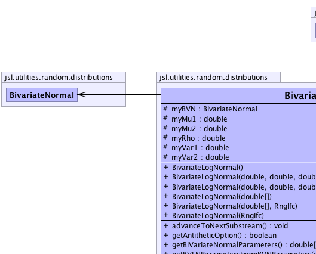
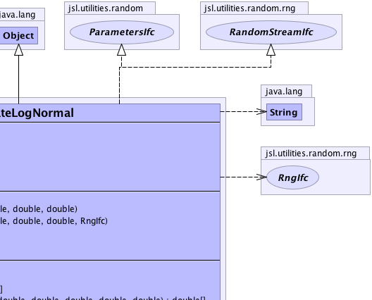
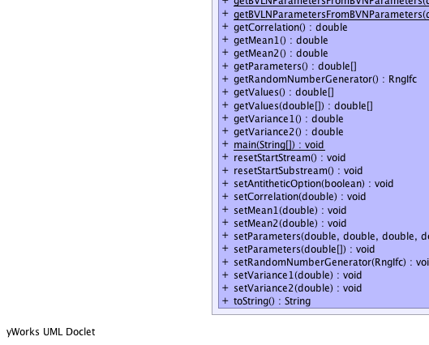
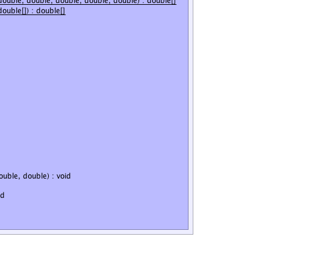

jsl.utilities.random.distributions.BivariateLogNormal
jsl.utilities.random.distributions.BivariateLogNormal
|
||||||||||
| PREV CLASS NEXT CLASS | FRAMES NO FRAMES | |||||||||
| SUMMARY: NESTED | FIELD | CONSTR | METHOD | DETAIL: FIELD | CONSTR | METHOD | |||||||||
java.lang.Object
public class BivariateLogNormal
Allows for the generation of bivariate lognormal random variables. Note that this class takes in the actual parameters of the bivariate lognormal and computes the necessary parameters for the underlying bivariate normal
|  |  |
|  |  |
| Field Summary | |
|---|---|
protected BivariateNormal |
myBVN
|
protected double |
myMu1
|
protected double |
myMu2
|
protected double |
myRho
|
protected double |
myVar1
|
protected double |
myVar2
|
| Constructor Summary | |
|---|---|
BivariateLogNormal()
Constructs a bivariate lognormal with mean's = 1.0, variance = 1.0. correlation = 0.0 |
|
BivariateLogNormal(double[] param)
Interprets the array of parameters as the parameters param[0] = mean 1; param[1] = variance 1; param[2] = mean 2; param[3] = variance 2; param[4] = correlation; |
|
BivariateLogNormal(double[] param,
RngIfc rng)
Interprets the array of parameters as the parameters param[0] = mean 1; param[1] = variance 1; param[2] = mean 2; param[3] = variance 2; param[4] = correlation; |
|
BivariateLogNormal(double mean1,
double var1,
double mean2,
double var2,
double rho)
|
|
BivariateLogNormal(double mean1,
double var1,
double mean2,
double var2,
double rho,
RngIfc rng)
These parameters are the parameters of the lognormal (not the bivariate normal) |
|
BivariateLogNormal(RngIfc rng)
Constructs a bivariate lognormal with mean's = 1.0, variance = 1.0. correlation = 0.0 |
|
| Method Summary | |
|---|---|
void |
advanceToNextSubstream()
Positions the RNG at the beginning of its next substream |
boolean |
getAntitheticOption()
|
double[] |
getBiVariateNormalParameters()
Returns the parameters of the underlying bivariate normal param[0] = mean 1; param[1] = variance 1; param[2] = mean 2; param[3] = variance 2; param[4] = correlation; |
static double[] |
getBVLNParametersFromBVNParameters(double[] param)
Takes in the parameters of a bivariate normal and returns the corresponding parameters for the bivariate lognormal x[0] = mean 1 of bivariate lognormal x[1] = variance 1 of bivariate lognormal x[2] = mean 2 of bivariate lognormal x[3] = variance 2 of bivariate lognormal x[4] = correlation of bivariate lognormal |
static double[] |
getBVLNParametersFromBVNParameters(double m1,
double v1,
double m2,
double v2,
double r)
Takes in the parameters of a bivariate normal and returns the corresponding parameters for the bivariate lognormal param[0] = mean 1 of bivariate lognormal param[1] = variance 1 of bivariate lognormal param[2] = mean 2 of bivariate lognormal param[3] = variance 2 of bivariate lognormal param[4] = correlation of bivariate lognormal |
double |
getCorrelation()
Gets the correlation |
double |
getMean1()
Gets the first mean |
double |
getMean2()
Gets the second mean |
double[] |
getParameters()
Returns the parameters as an array param[0] = mean 1; param[1] = variance 1; param[2] = mean 2; param[3] = variance 2; param[4] = correlation; |
RngIfc |
getRandomNumberGenerator()
|
double[] |
getValues()
Returns an array containing the bivariate pair x[0] = 1st marginal x[1] = 2nd marginal |
double[] |
getValues(double[] x)
Fills the supplied array with 2 values As a convenience also returns the array |
double |
getVariance1()
Gets the first variance |
double |
getVariance2()
Gets the 2nd variance |
static void |
main(java.lang.String[] args)
|
void |
resetStartStream()
The resetStartStream method will position the RNG at the beginning of its stream. |
void |
resetStartSubstream()
Resets the position of the RNG at the start of the current substream |
void |
setAntitheticOption(boolean flag)
Tells the stream to start producing antithetic variates |
void |
setCorrelation(double rho)
Sets the correlation |
void |
setMean1(double mean)
Sets the first mean |
void |
setMean2(double mean)
Sets the second mean |
void |
setParameters(double[] param)
Interprets the array of parameters as the parameters param[0] = mean 1; param[1] = variance 1; param[2] = mean 2; param[3] = variance 2; param[4] = correlation; |
void |
setParameters(double m1,
double v1,
double m2,
double v2,
double r)
Takes in the parameters of the bivariate lognormal and sets the parameters of the underlying bivariate normal |
void |
setRandomNumberGenerator(RngIfc rng)
|
void |
setVariance1(double variance)
Sets the first variance |
void |
setVariance2(double variance)
Sets the 2nd variance |
java.lang.String |
toString()
|
| Methods inherited from class java.lang.Object |
|---|
clone, equals, finalize, getClass, hashCode, notify, notifyAll, wait, wait, wait |
| Field Detail |
|---|
protected BivariateNormal myBVN
protected double myMu1
protected double myVar1
protected double myMu2
protected double myVar2
protected double myRho
| Constructor Detail |
|---|
public BivariateLogNormal()
public BivariateLogNormal(RngIfc rng)
rng -
public BivariateLogNormal(double mean1,
double var1,
double mean2,
double var2,
double rho)
mean1 - var1 - mean2 - var2 - rho - public BivariateLogNormal(double[] param)
param -
public BivariateLogNormal(double[] param,
RngIfc rng)
param - rng -
public BivariateLogNormal(double mean1,
double var1,
double mean2,
double var2,
double rho,
RngIfc rng)
mean1 - lognormal meanvar1 - lognormal variancemean2 - lognormal 2nd meanvar2 - lognormal 2nd variancerho - correlation of lognormalsrng - | Method Detail |
|---|
public void setParameters(double m1,
double v1,
double m2,
double v2,
double r)
m1 - v1 - m2 - v2 - r - public final void setParameters(double[] param)
setParameters in interface ParametersIfcparam - public final double[] getParameters()
getParameters in interface ParametersIfcpublic final double[] getBiVariateNormalParameters()
public static final double[] getBVLNParametersFromBVNParameters(double m1,
double v1,
double m2,
double v2,
double r)
m1 - mean 1 of bivariate normalv1 - variance 1 of bivariate normalm2 - mean 1 of bivariate normalv2 - variance 2 of bivariate normalr - correlation of bivariate normal
public static final double[] getBVLNParametersFromBVNParameters(double[] param)
param - array of parameters representing the bivariate normal
public final void setMean1(double mean)
mean - of the distributionpublic final double getMean1()
public final void setVariance1(double variance)
variance - of the distribution, must be > 0public final double getVariance1()
public final void setMean2(double mean)
mean - public final double getMean2()
public final void setVariance2(double variance)
variance - of the distribution, must be > 0public final double getVariance2()
public final void setCorrelation(double rho)
rho - public final double getCorrelation()
public void setAntitheticOption(boolean flag)
RandomStreamIfc
setAntitheticOption in interface RandomStreamIfcflag - true means that it produces antithetic variates.public void resetStartSubstream()
RandomStreamIfc
resetStartSubstream in interface RandomStreamIfcpublic void resetStartStream()
RandomStreamIfc
resetStartStream in interface RandomStreamIfcpublic void advanceToNextSubstream()
RandomStreamIfc
advanceToNextSubstream in interface RandomStreamIfcpublic boolean getAntitheticOption()
getAntitheticOption in interface RandomStreamIfcpublic double[] getValues(double[] x)
x - Must be of size 2 or larger
public double[] getValues()
public RngIfc getRandomNumberGenerator()
public void setRandomNumberGenerator(RngIfc rng)
public java.lang.String toString()
toString in class java.lang.Objectpublic static void main(java.lang.String[] args)
|
||||||||||
| PREV CLASS NEXT CLASS | FRAMES NO FRAMES | |||||||||
| SUMMARY: NESTED | FIELD | CONSTR | METHOD | DETAIL: FIELD | CONSTR | METHOD | |||||||||